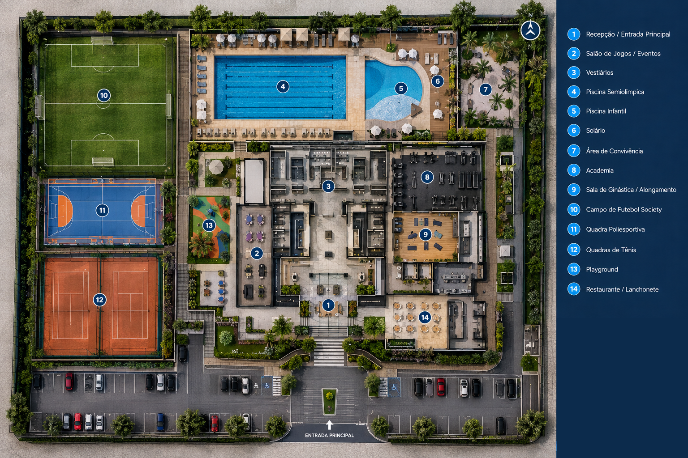
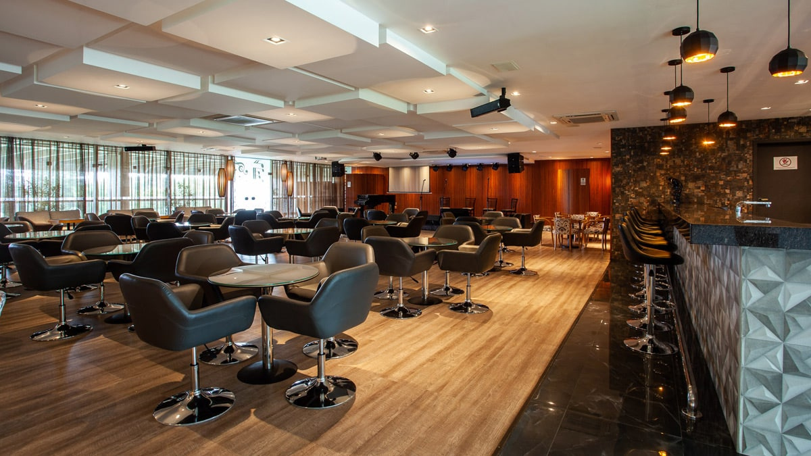
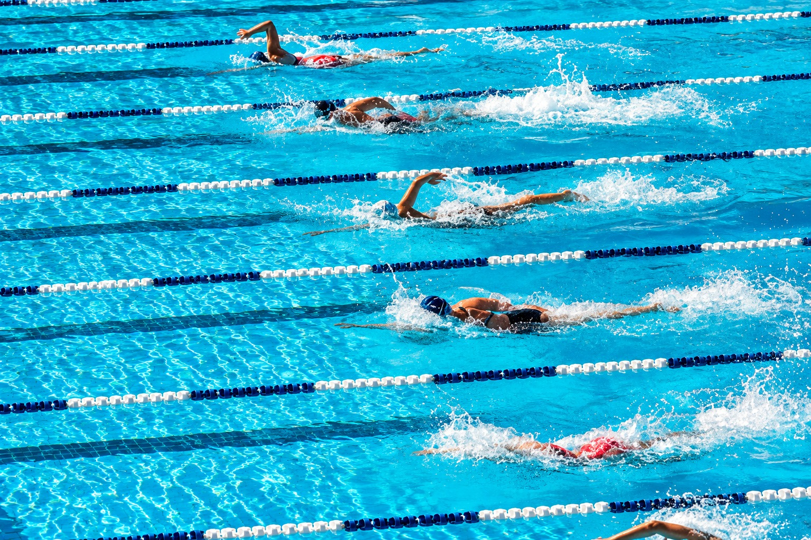
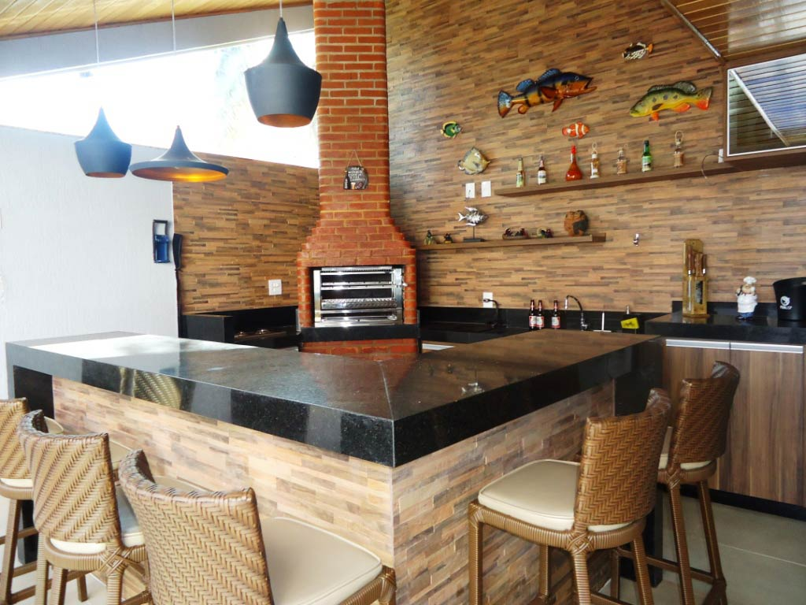
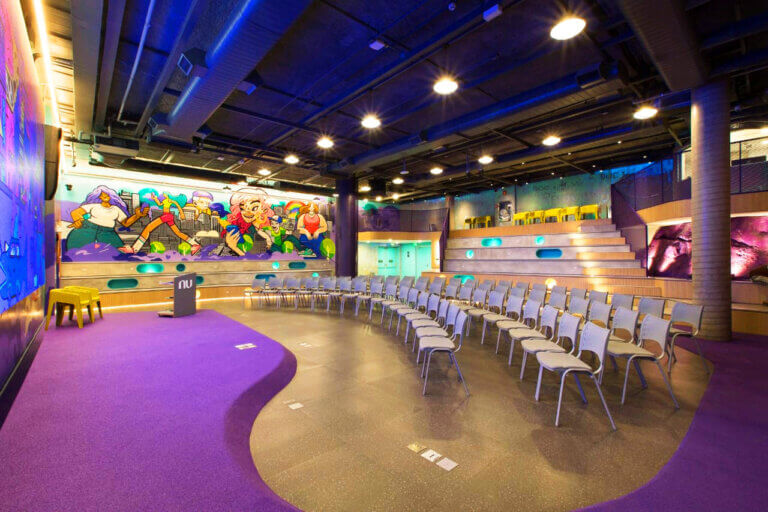
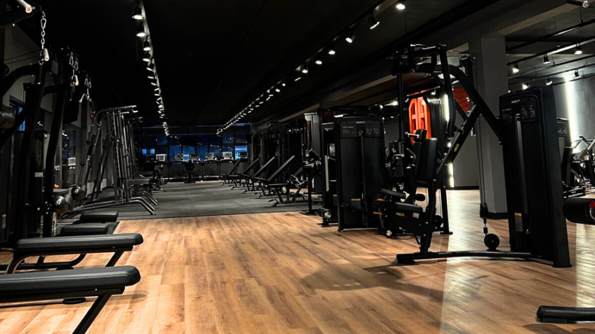
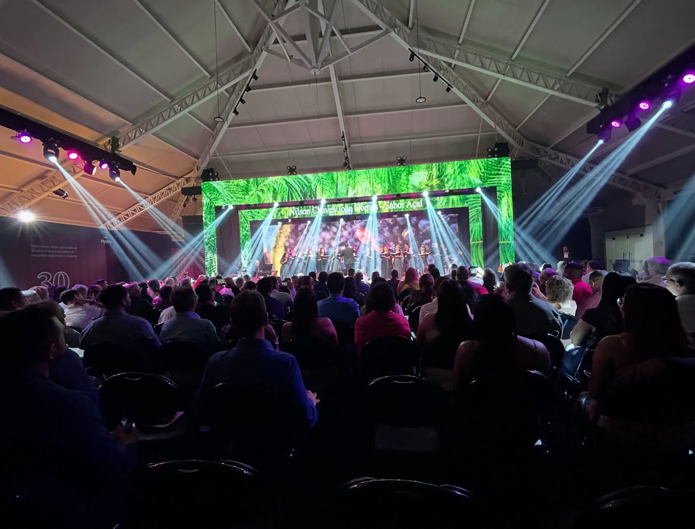

Sobre o Clube
Fundado em 1987, o Clube Social e Esportivo União (CSEU) nasceu do sonho de um grupo de moradores apaixonados por esporte, convivência e comunidade, tornando-se, ao longo de quase quatro décadas, um dos principais pontos de encontro da região. Com uma área de aproximadamente 25 mil m², o clube reúne atualmente mais de 1.800 associados e oferece uma estrutura diversificada para todas as idades, com quadras esportivas, campos, piscinas, salão social, espaços para eventos, áreas de lazer e ambientes destinados à convivência entre famílias e amigos. Mais do que um espaço para a prática esportiva, o CSEU construiu uma história marcada por campeonatos, celebrações, encontros e momentos que atravessam gerações, promovendo saúde, integração, lazer e qualidade de vida para associados, atletas, dependentes e toda a comunidade. Hoje, o Clube Social e Esportivo União segue renovando sua estrutura e ampliando suas atividades, mantendo viva a missão de ser um lugar onde cada pessoa possa praticar esporte, fazer amizades, celebrar conquistas e criar memórias que permanecem para toda a vida.
Missão
Promover esporte, lazer, saúde e convivência em um ambiente acolhedor, seguro e inclusivo, oferecendo aos associados, atletas, dependentes e familiares experiências
que contribuam para a qualidade de vida, o desenvolvimento pessoal e o fortalecimento dos laços de amizade e comunidade. O CSEU tem como missão ser um espaço de encontro
entre gerações, incentivando a prática esportiva, a integração social e a criação de momentos e memórias que façam parte da vida de seus associados.
Visão
Ser reconhecido como um dos principais clubes sociais e esportivos da região,
destacando-se pela excelência em suas atividades, pela qualidade de sua estrutura
e pelo compromisso com seus associados. O CSEU busca crescer de forma sustentável, inovar continuamente e oferecer experiências cada vez melhores
em esporte, lazer e convivência, tornando-se referência em integração, bem-estar e qualidade de vida para as atuais e futuras gerações.
Nossos Valores
- Respeito: valorizar a todos.
- Ética: agir com integridade.
- Responsabilidade: cuidar e cumprir.
- Integração: unir pessoas
- Inclusão: acolher a todos.
- Espírito esportivo: competir com respeito.
- Convivência social: compartilhar e celebrar.
- Preservação dos espaços: cuidar do que é nosso.
Estrutura

Área de Lazer

Piscinas

Churrasqueiras

Eventos

Áreas recreativas

Além das atividades esportivas, o clube conta com espaços planejados
para o lazer, o descanso e a convivência entre associados, dependentes
e familiares. São ambientes que proporcionam momentos de descontração,
integração e bem-estar,fortalecendo os vínculos entre as pessoas e tornando
o CSEU um verdadeiro espaço de encontro, amizade e construção de boas memórias.
Eventos

Os espaços do clube podem ser utilizados para eventos sociais, encontros, confraternizações e atividades organizadas pelo clube.
Para consultar informações sobre reservas, acesse a página de reservas.
Ver reservasHorário de Funcionamento
| Dia | Horário |
|---|---|
| Segunda-feira | 06:00 às 22:00 |
| Terça-feira | 06:00 às 22:00 |
| Quarta-feira | 06:00 às 22:00 |
| Quinta-feira | 06:00 às 22:00 |
| Sexta-feira | 06:00 às 22:00 |
| Sábado | 08:00 às 18:00 |
| Domingo | 08:00 às 16:00 |
Regras de Utilização
- Respeitar os horários de funcionamento.
- Preservar os espaços e equipamentos.
- Respeitar os demais associados.
- Manter os ambientes limpos e organizados.
- Seguir as orientações dos funcionários do clube.
- Respeitar as regras específicas de cada modalidade.